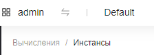
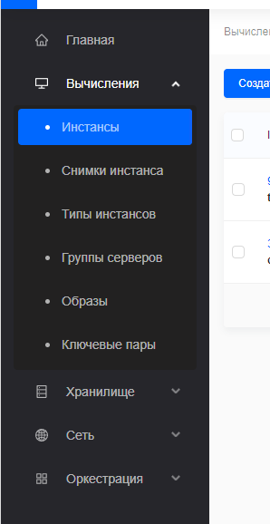
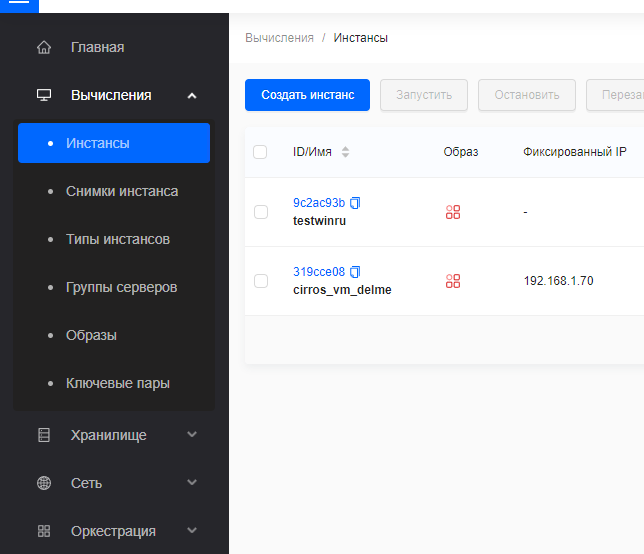
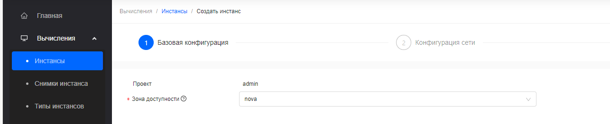
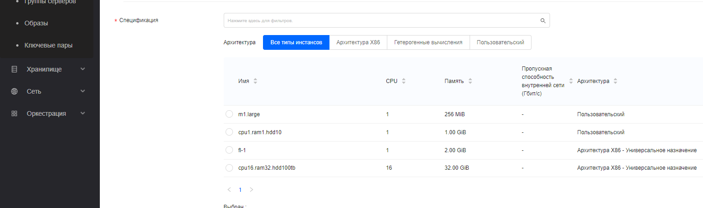
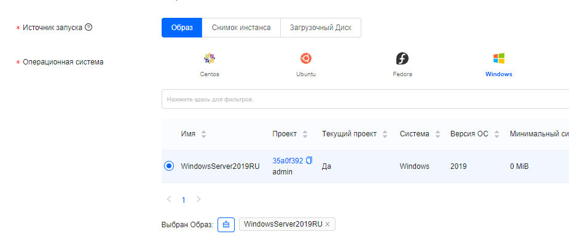
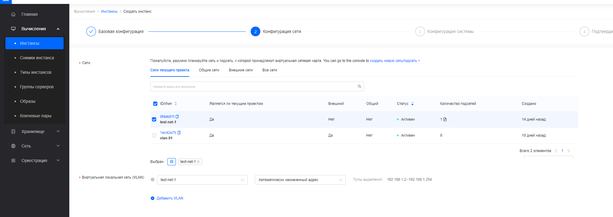
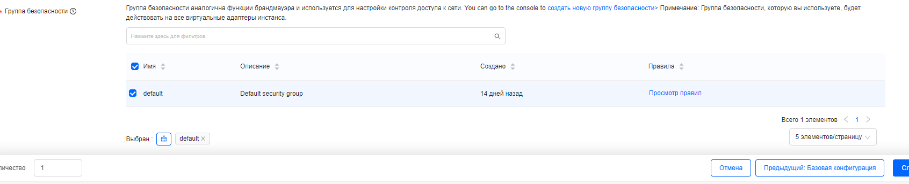
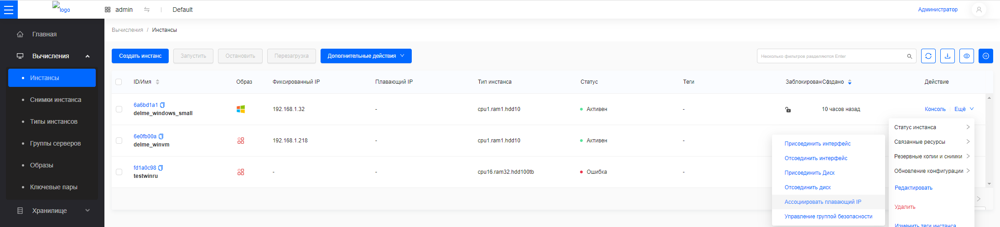
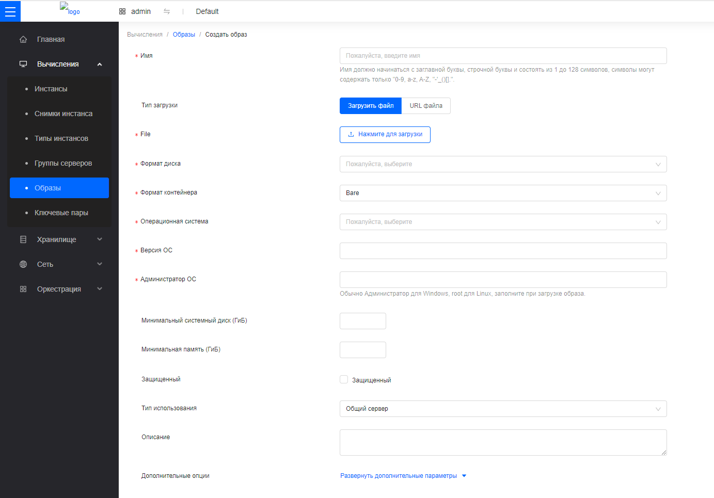

Запуск и управление инстансами (вкладка Вычисления)¶
Сервис OpenStack Вычисления предоставляет возможность развертывания инстансов (виртуальных машин). В случае необходимости в более подробной информации смотрите Руководство OpenStack Nova.
Создание пары ключей¶
Для управления и входа в создаваемые инстансы можно использовать пароли (задаются на этапы создания инстанса) или ключевые пары (в системе используются ключи ssh; под ключевой парой подразумевается публичный и закрытый ключ из пары ssh-ключей). Ключевая пара может использоваться для входа *nix-like систему и для безопасной расшифровки пароля в Windows системах, если он был задан таким способом.
Войдите в дашборд.
Выберите соответствующий проект из меню переключения проектов в верхнем левом углу.

На странице
Консольоткройте вкладкуВычисленияи нажмите на категориюКлючевые пары.

Нажмите
Создать пару ключей.В диалоговом окне
Создать ключевую парувыберите один из вариантовСоздать тип:Создать ключевую пару: Если выберете этот вариант, введитеИмяИмпорт ключевой пары: Если выберете этот вариант, появится новое поле дляПубличный ключ. ВведитеИмявашей ключевой пары, скопируйте публичный ключ в полеПубличный ключ.
Нажмите
OK. Дашборд отобразит ключевую пару на вкладкеКлючевые пары.
Запуск инстанса¶
Войдите в дашборд.
Выберите соответствующий проект из меню Switch Project в верхнем левом углу.
На странице
Консольоткройте вкладкуВычисленияи нажмите на категориюИнстансы.

Нажмите
Создать инстанс.

На странице
Создание инстансавведите следующие значения для запускаемого инстанса.Зона доступности: Зона доступности, в которой будет запущен сервер. В случае с облаками малого размера можно ничего не выбирать.

Спецификация: Выберите конфигурацию для вашего инстанса, исходя из вычислительных потребностей.

Источник запуска: Выберите один из следующих вариантов:Образ: Если выберете этот вариант, появится новое поле для
Операционная система. Вы можете выбрать образ из списка. И введите размер диска, используемого какСистемный дискинстанса.

> **Важное замечание** > > Выберите вариант `Удалять вместе с инстансом`, чтобы удалить диск при удалении инстанса. Эта опция позволяет избегать замусоривания хранилища блочных устройств. > >  > > В то же время, сохранять диск после удаления инстанса может быть полезно, если в дальнейшем необходимо создать новый инстанс с этим системным диском. Будьте внимательны, это очень важная настройка.
Снимок инстанса: Используя этот вариант, вы можете загрузиться с снимка диска и создать новый диск, выбрав
Снимок инстансаиз списка.Загрузочный диск: Если выберете этот вариант, появится новое поле для
Загрузочный диск. Вы можете выбрать диск из списка.
Данные диска: Диски, подключенные к инстансу.
Нажмите
Далее: Конфигурация сетиВы можете выбрать
Сети,Портыили их комбинацию для сетевой конфигурации инстанса.Сети: Добавьте сеть к инстансу. Если вы указываете сети,Виртуальная локальная сеть (VLAN)иГруппа безопасностиявляются обязательными полями.

Виртуальная локальная сеть (VLAN): Укажите подсеть сети и назначьте фиксированный IP адрес автоматически или вручную для инстанса.
Группа безопасности: Группы безопасности - это вид облачного файервола, который определяет, какой входящий сетевой трафик перенаправляется на инстансы.
Порты: Активируйте порты, которые вы хотите назначить инстансу.Нажмите
Далее: Конфигурация системы.Имя: Имя сервера.Тип входа в систему: Выберите один из следующих вариантов:Пара ключей: Если выберете этот вариант, появится новое поле для
Пара ключей. Пара ключей позволяет вам подключиться по SSH к вашему вновь созданному инстансу. Вы можете выбрать существующую пару ключей, импортировать пару ключей или создать новую пару ключей.Пароль: Введите
Пароль для входаи подтвердите его. И вы можете войти в инстанс, используя пароль.

Нажмите
Далее: Подтверждение конфигурациии подтвердите свой выбор.Инстанс создается и вы можете подождать несколько секунд, чтобы следить за изменениями списка данных инстанса или вручную обновить данные, чтобы получить окончательный результат отображения.
Создание снимка инстанса¶
Войдите в дашборд.
Выберите соответствующий проект из меню переключения проектов в верхнем левом углу.
На странице
Консольоткройте вкладкуВычисленияи нажмите на категориюИнстансы.Выберите инстанс для создания с него снимка.
В столбце
ДействиевыберитеРезервное копирование и снимкии нажмитеСоздать снимок.

В диалоговом окне
Создание снимка инстансавведите имя снимка.Нажмите
OK.Дашборд покажет новый снимок инстанса на вкладке
Снимки инстансов.
Управление состоянием инстанса¶
Войдите в дашборд.
Выберите соответствующий проект из меню переключения проектов в верхнем левом углу.
На странице
Консольоткройте вкладкуВычисленияи нажмите на категориюИнстансы.Выберите инстанс, для которого вы хотите изменить состояние.
В столбце
Действиеинстанса нажмитеСтатус инстансаи выберите статус.
Назначение плавающего IP-адреса инстансу¶
Плавающие IP — это очень важная концепция в облачной среде. В рамках облачной среды зачастую используются сети, которые являются локальными для данного проекта в облаке. Они зачастую строятся на технологиях VLAN или оверлейных сетях (например, geneve или vxlan). С другой стороны, для части серверов важно быть видимыми из интернета или из внутренних сетей на стороне организации. В этом случае зачастую используются плавающие IP: они привязываются к инстансам по мере необходимости (и их можно отвязать и переназначить другим инстансам). Сама операционная система инстанса про такие IP ничего не знает; они срабатывают как NAT-адреса для доступа к инстансу.
Войдите в дашборд.
Выберите соответствующий проект из мменю переключения проектов в верхнем левом углу.
На странице
Консольоткройте вкладкуВычисленияи нажмите на категориюИнстансы.В столбце
ДействиевыберитеСвязанные ресурсыи нажмитеНазначить плавающий IP.

В диалоговом окне
Назначение плавающего IPвыберитеIP инстансаиПлавающий IP-адрес.Нажмите
OK.
Важное замечание
Чтобы отменить назначение IP-адреса инстансу, нажмите кнопку
Отменить назначение плавающего IP.
Загрузка образа¶
Образы используются для создания виртуальных машинных инстансов в облаке. Для получения более подробной информации о создании файлов образов смотрите Руководство OpenStack Glance.
Войдите в дашборд.
Выберите соответствующий проект из меню Switch Project в верхнем левом углу.
На странице
Консольоткройте вкладкуВычисленияи нажмите на категориюОбразы.Нажмите
Создать образ.На странице
Создание образавведите следующие значения:Имя: Имя образа.Тип загрузки: Выберите один из следующих вариантов:Загрузить файл: Если выберете этот вариант, нажмите
Нажмите для загрузкичтобы загрузить двоичный файл данных образа.URL файла: Если выберете этот вариант, введите
URL файла.
Формат диска: Выберите формат образа (например, QCOW2) для образа.Формат контейнера: Для виртуальных машин выбирайте Bare. Для образов Docker, выбирайте Docker (но это нужно только если вы точно знаете, что в системе есть узлы, использующие контейнеры вместо виртуальных машин, иначе в этом нет смысла).Операционная система: Выберите операционную систему образа (например, CentOS).Версия ОС: Версия операционной системы образа. Используйте общепринятую нотацию; система обращает внимание на номера версий.Администратор ОС: Имя администратора операционной системы образа. В общем случае, Administrator для Windows, root для Linux.Мин. системный диск (ГБ): Количество дискового пространства в ГБ, необходимое для загрузки образа.Мин. память (ГБ): Количество памяти в ГБ, необходимое для загрузки образа.Защищенный: Защита образа от удаления.Тип использования: Выберите тип использования (например, Общий сервер) для образа.Описание: Человеко-читаемое описание ресурса.Дополнительные опции: Имеет смысл менять только если вы точно знаете, что делаете.
Нажмите
Подтвердить.Образ ставится в очередь на загрузку. Может потребоваться некоторое время, прежде чем статус изменится с
В очерединаАктивный.